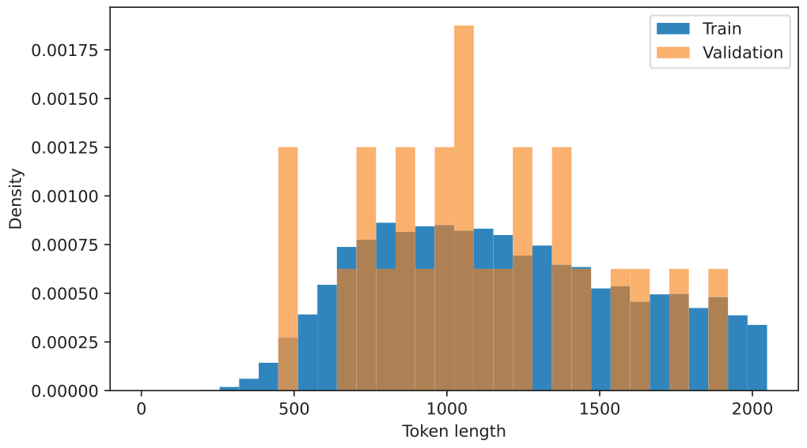
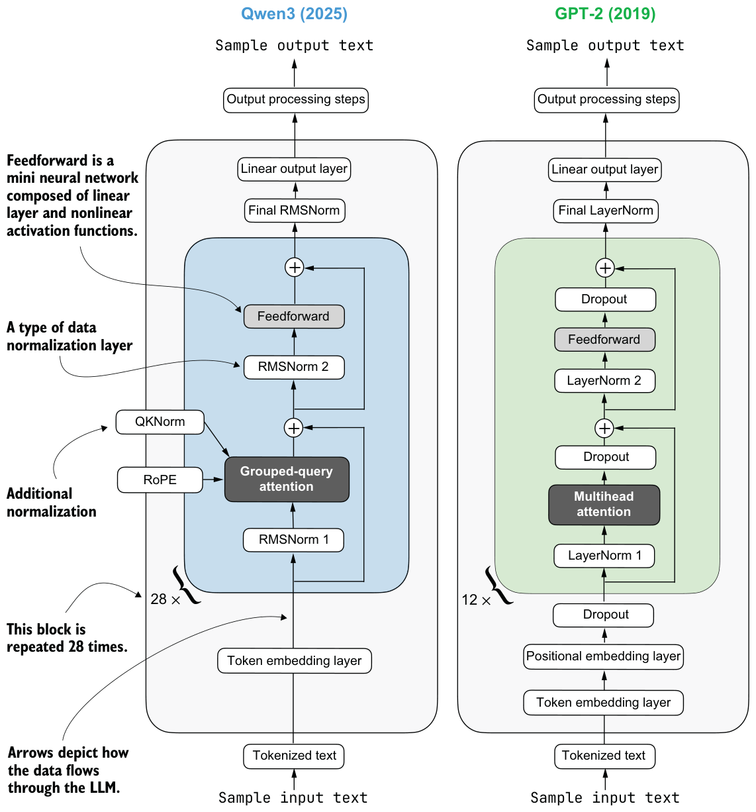

B.7Chapter 8
Exercise 8.1: Training and validation set lengths
To calculate the training and validation answer length statistics, you can add the following commands at the end of listing 8.7 in section 8.4.3, following the partitioning:
compute_length(train_examples)
# Prints
# Average: 1180 tokens
# Shortest: 236 tokens (index 5730)
# Longest: 2048 tokens (index 1319)As you can see, the average token length (1180 versus 1106) is fairly similar, and the datasets should be relatively balanced.
As a bonus, we can plot histograms to visualize the distributions:
import matplotlib.pyplot as plt
train_lengths = [len(ex["token_ids"]) for ex in train_examples]
val_lengths = [len(ex["token_ids"]) for ex in val_examples]
# Normalize counts because the validation split is much smaller
bins = range(0, max(train_lengths + val_lengths) + 64, 64)
fig, ax = plt.subplots(figsize=(7, 4))
ax.hist(train_lengths, bins=bins, density=True, alpha=0.6, label="Train")
ax.hist(val_lengths, bins=bins, density=True, alpha=0.6, label="Validation")
ax.set_xlabel("Token length")
ax.set_ylabel("Density")
ax.legend()
plt.tight_layout()
plt.show()The resulting plot is shown in figure B.3.
There are far fewer validation samples, which is why the validation histogram seems a bit jagged, but as you can see, it still provides good coverage of the distribution.
Exercise 8.2: Distilling without <think> tokens
We can replicate the runs without <think></think> tokens in the script execution command:
uv run distill.py \
--data_path deepseek-r1-math-train.json \
--validation_size 25 \
--epochs 3 \
--lr 1e-5 \
--max_seq_len 2048 \
--grad_clip 1.0
For the evaluation, we can use the base instead of reasoning model:
uv run evaluate_math500.py \
--dataset_size 500 \
--which_model base \
--max_new_tokens 4096 \
--checkpoint_path \
run_11/checkpoints/distill/qwen3-0.6B-distill-step05746-epoch1.pthThe results are shown in table B.6, where the new results (without <think> tokens) are shown first, with the corresponding think-token results (from the chapter) in parentheses.
| Method | Epoch | Final validation loss | MATH-500 accuracy | |
|---|---|---|---|---|
| 1 | Base Qwen3 0.6B (chapter 3) | - | - | 15.2% |
| 2 | Reasoning Qwen3 0.6B (chapter 3) | - | - | 48.2% |
| 3 | DeepSeek-R1 | 0.5436 (0.5404) | 31.8% (30.6%) | |
| 4 | DeepSeek-R1 | 0.5349 (0.5339) | 31.8% (32.4%) | |
| 5 | DeepSeek-R1 | 3 | 0.5343 (0.5306) | 30.2% (33.6%) |
| 6 | Qwen3 235B-A22B | 1 | 0.4043 (0.3130) | 44.8% (45.0%) |
| 7 | Qwen3 235B-A22B | 2 | 0.3963 (0.3087) | 39.4% (43.8%) |
| 8 | Qwen3 235B-A22B | 3 | 0.3948 (0.3078) | 39.8% (44.2%) |
Interestingly, the Qwen3 model has a lower validation loss when <think></think> tokens are omitted, but this doesn’t translate into better modeling performance. The omission of <think> makes the results slightly worse in almost all cases.
appendix C Qwen3 LLM source code
Although this is a “from scratch” book, that part of the title refers to the reasoning techniques, not to the LLM itself. Implementing an LLM entirely from scratch would require a separate book, such as my Build a Large Language Model (From Scratch), also available from Manning (http://mng.bz/orYv).
If you’re interested in the Qwen3 implementation used in this book, this appendix lists the source code for the Qwen3Model model that I implemented and that we import from the book’s reasoning_from_scratch Python package:
from reasoning_from_scratch.qwen3 import Qwen3Model, Qwen3TokenizerAs shown in figure C.1, the Qwen3 architecture is very similar to GPT-2, which I cover in my Build A Large Language Model (From Scratch) book. While familiarity with GPT-2 is not required for this book, this appendix includes comparisons to GPT-2 for readers who are familiar with it. In fact, I wrote the Qwen3 implementation by porting the GPT-2 model from my other book, piece by piece, into the Qwen3 architecture so that it follows similar style conventions and is easier to read.
As shown in figure C.1, Qwen3 (released in 2025) and GPT-2 (released in 2019) are broadly similar in that they are both based on the decoder submodule of the original Transformer architecture. But some design choices have evolved since 2019. Note that most of the design choices found in Qwen3 are not unique to Qwen3 but are found in many other contemporary LLMs, as I discussed in “The Big LLM
Sample output text
Sample output textSample input text
Sample input text
Architecture Comparison” (https://magazine.sebastianraschka.com/p/the-big-llm-architecture-comparison).
If you’re new to LLMs and want to understand how these architectures are implemented, I recommend starting with GPT-2. Its design is simpler to implement, which makes it an easier entry point before exploring more modern variations.
Since this book does not focus on architecture implementations, the rest of this appendix provides only a brief overview of Qwen3’s code.